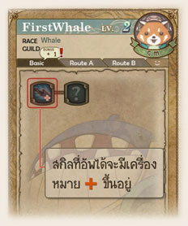
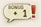
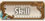
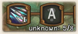
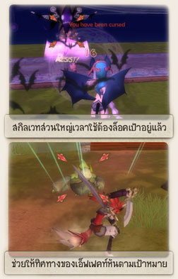
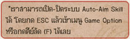
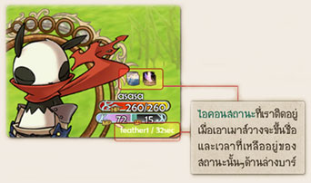
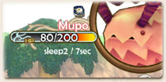

| |
|
|
|
| |
 |
การอัพสกิล
ทุกๆ ครั้งที่เราเลเวลอัพ 1 เลเวลจะได้ Skill Bonus มา 2 พอยท์เสมอ
โดยจะมีไอคอน ขึ้นอยู่
- คลิกปุ่ม  ด้านขวาล่างหรือ
F2 เพื่อเปิดเมนูสกิล
- อัพสกิลโดยคลิกเมาส์ซ้ายบนรูปสกิลที่ต้องการ |
|
| |
 |
ในบางครั้งเราจะพบว่า ถึงแม้จะมีสกิลพ้อยท์เหลืออยู่ แต่ก็ยังอัพบาง
สกิลไม่ได้อยู่ดีให้สังเกตเลขที่ขึ้นด้านล่าง (เมื่อนำเมาส์ไปวาง)
จำนวนสกิลที่อัพไปแล้วในสายนี้ / จำนวนที่ต้องการในการ
อัพสกิลสายนั้นๆ
ในตัวอย่างจึงหมายถึง เราได้อัพสกิลสายสายนี้ไปแล้ว 5 สกิล แต่
สกิล A ต้องการทั้งหมด 8 สกิลจึงยังไม่สามารถอัพได้ |
|
|
| |
|
 |
|
การใช้สกิล
เช่นเดียวกับการโจมตีปกติ จุดที่สำคัญในการใช้สกิลให้ได้ผล
คือการล๊อคเป้าหมาย เมื่อล๊อคเป้าหมายแล้วให้คลิกเมาส์ซ้าย
บนไอคอนสกิลที่ต้องการใช้
- หลายๆ สกิลในเกมบังคับให้ต้องล๊อคเป้าก่อนจึงจะกดใช้ได้
- มีประโยชน์ คือ ทำให้การโจมตีที่เป็นวิถีโค้งต่างๆ เช่น
เวทย์กระสุน พุ่งเข้าใส่เป้าหมายโดยตรง ส่วนท่าโจมตีระยะใกล้
ที่เป็นลักษณะการพุ่ง ก็จะหันตามเป้าหมายทำให้มีความแม่นยำ
มากขึ้น |
| 
|
|
| |
สถานะผิดปกติต่างๆ
จะสังเกตได้ว่า ทั้งท่าโจมตี และสกิลหลายสกิล
ให้ให้เกิดการติดบัฟ(สถานะดี)หรือ ดีบัฟ(สถานะร้าย) |

|
|
|  |
เมื่อเราล๊อคเป้าหมายที่ตัวเพื่อน หรือศัตรู (คลิกขวาที่ตัวละคร)
หรือคลิก Shift / SpaceBar)ก็จะเห็นลักษณ์ต่างๆ ที่กำลังติดอยู่ |
|